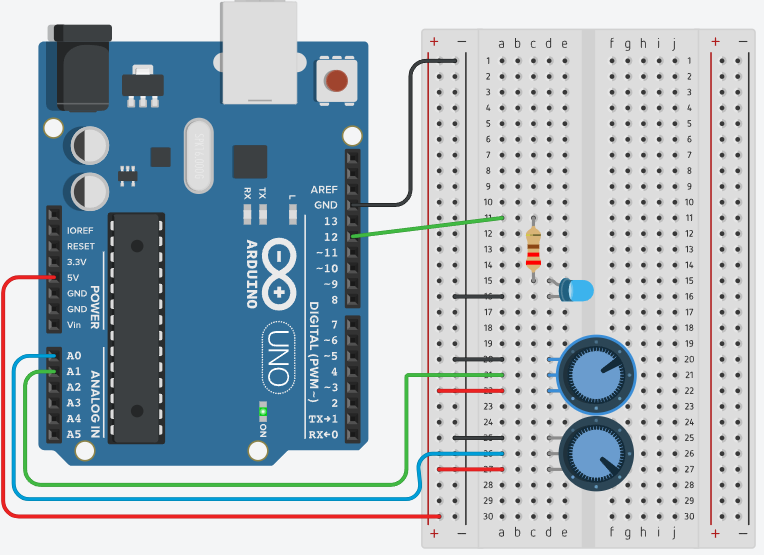

Fonte Tinkercad
Tinkercad
Arduino é uma plataforma que possibilita o desenvolvimento de projetos eletrônicos.
é um microcontrolador CMOS de 8 bits de baixa potência baseado na arquitetura AVR® RISC aprimorado. Para maximizar o desempenho e o paralelismo, o AVR usa a arquitetura Harvard - com memórias e barramentos separados para programa e dados.